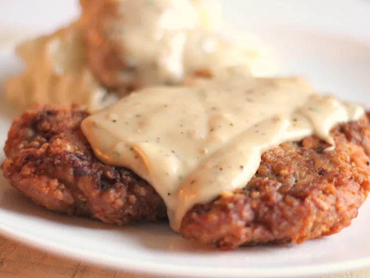

Savoury Chicken Fried Steak Recipe

Description:
This delicious fried chicken steak recipe from AllRecipes.com
will get you all fired up!
- Prep time - 20 mins
- Cook time - 20 mins
- Total time - 40mins
- Servings - 4
Ingredients:
- 4 (1/2 lb) beef cube steaks
- 2 + 1/4 cups all-purpose flour, divided
- 2 tsp baking powder
- 1 tsp baking soda
- 1 tsp black pepper
- 3/4 tsp salt
- 1 + 1/2 cups buttermilk
- 1 tbsp hot pepper sauce (e.g. Tabasco)
- 1 lg egg
- 2 cloves garlic, minced
- 3 cups vegetable shortening for frying
- 4 cups milk
- kosher salt and ground black pepper to taste
Directions
-
Place steaks between 2 layers of plastic and pound
to a thickness of 1/4 inch.
-
Place 2 cups flour in a shallow bowl.
-
Stir together baking powder, baking soda, 1 tsp pepper,
and 3/4 tsp salt in a second shallow bowl. Add buttermilk,
Tabasco sauce, egg, and garlic; stir to combine.
-
Heat shortening in a deep cast-iron skillet to 325 degrees F
(165 degrees C). Place a wire rack over a sheet of parchment paper.
-
While the shortening is heating, dredge a steak in flour to
coat; shake off excess. Dip into buttermilk batter; lift up
so excess batter drips back into the bowl. Press in flour
again to coat both sides completely. Place breaded steak on
the wire rack and repeat to bread remaining steaks.
- Fry steaks, in batches if necessary, until evenly golden
brown, 3 to 5 minutes per side. Remove steaks to a paper
towel-lined plate to drain. Cover with foil to keep warm
while you make the gravy.
-
Drain fat from the skillet, reserving 1/4 cup of the liquid
and as much of the solid remnants as possible.
-
Return the skillet to medium-low heat; add the reserved oil.
Whisk the remaining 1/4 cup flour into the oil. Scrape the
bottom of the pan with a spatula to release solids into the gravy.
-
Stir in milk, increase the heat to medium, and bring the
gravy to a simmer. Cook, stirring often, until thick,
6 to 7 minutes. Season with kosher salt and pepper.
-
Transfer steaks to a platter and pour gravy over top.
View more details here